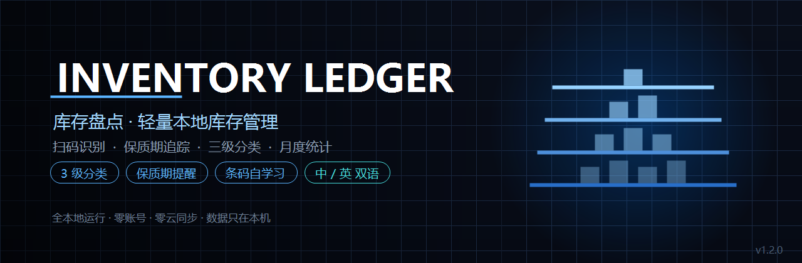
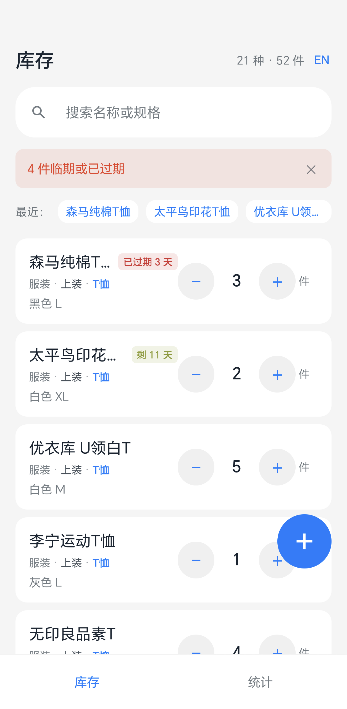
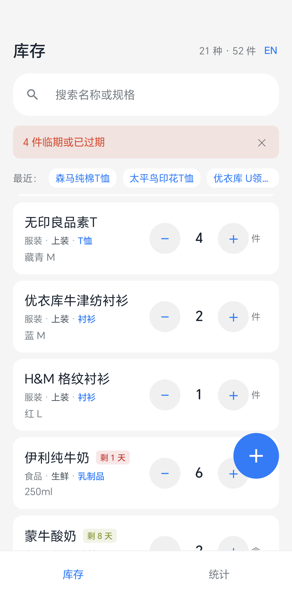
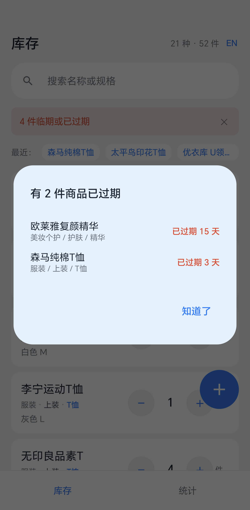
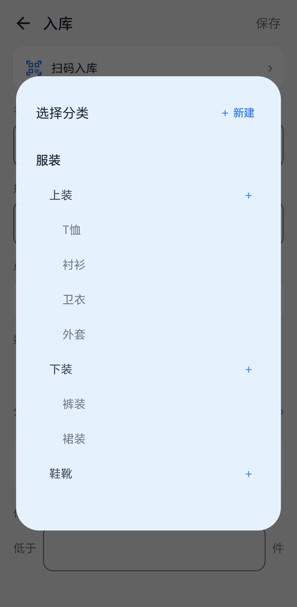
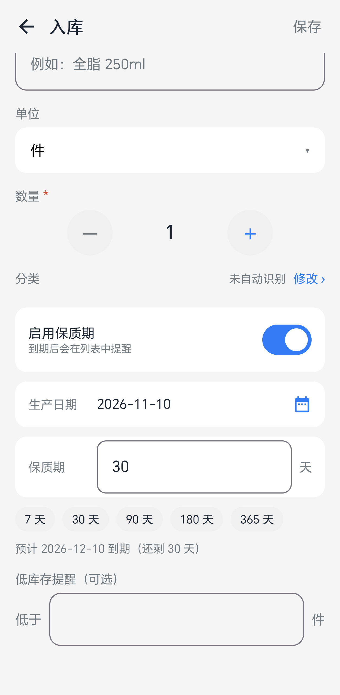
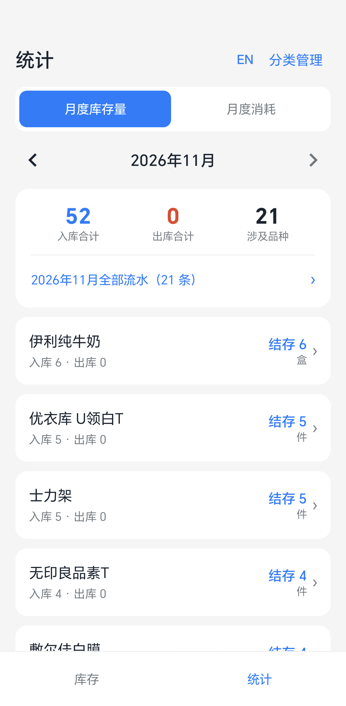
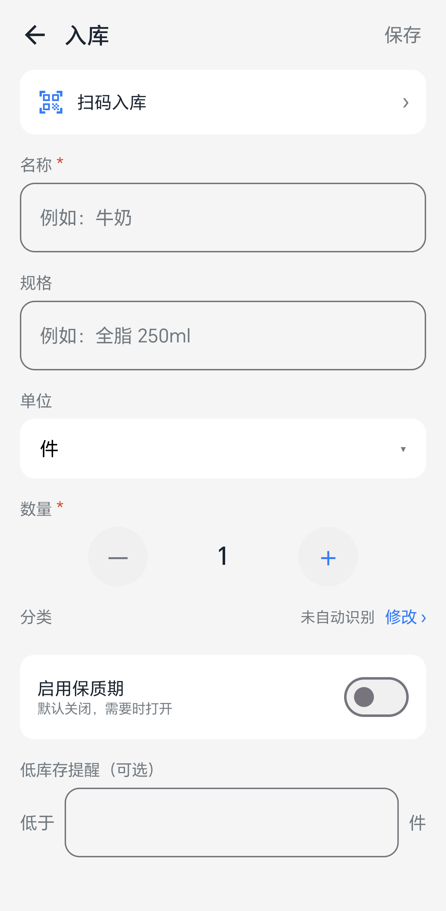
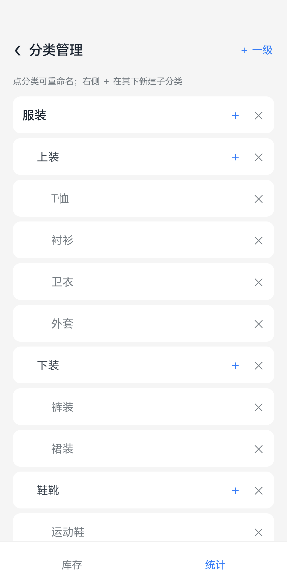
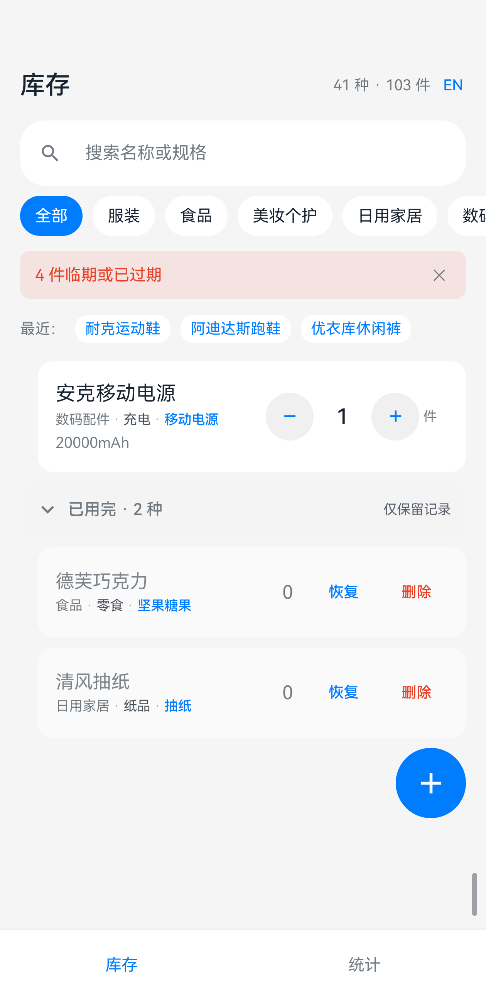

扫码或手输入库，在主列表直接加减数量，保质期商品自动按临期程度排序。 三级分类让「T恤」和「精华」各有归属，进应用先提醒已过期的清单。
全本地运行 · 无账号 · 无云同步 · 不联网也能用

大多数库存 App 要么太轻（备忘录），要么太重（专业 WMS）。 这个项目只解决「个人和小店真正会遇到的四个问题」。
服装 → 上装 → T恤，美妆个护 → 护肤 → 精华。同分类的商品永远挨在一起， 不会被保质期排序打散。这一条听起来简单，但把「分类」放在排序第一键 还是第二键，决定了用户找东西是快还是慢。
默认关闭，需要时打开，填生产日期和保质期天数，到期日自动算。 列表内同分类的商品聚在一起，组内保质期商品按剩余天数升序， 已过期的排在组内最前。进应用先弹窗列出全部过期商品。
Room 本地数据库，没有账号、没有云同步、没有埋点。 联网只用于「扫码查商品信息」，失败或断网时除这一项外所有功能照常。
数量减到 0 时可以选择删除或保留。选保留的商品收进列表底部一个折叠的 「已用完」分区，随时能恢复或彻底删除 —— 既不凭空消失，也不占着主列表。
这些不是宣传语，是改代码时不许破坏的边界。
withTransaction() 里，任一失败整体回滚。浅色模式实拍，已裁去系统状态栏。









悬停可暂停；下方截图会缓缓横向滚动
| 备忘录 | 能记，改要重写；做不到分类到第三层 |
|---|---|
| 专业库存软件 | 要先建 SKU、录供应商；个人用不上那么重 |
| 本项目 | 列表直接 −/+；80 个预置分类可增删改 |
| 系统 | Android 7.0 (API 24) 及以上 |
|---|---|
| 存储 | 约 10 MB |
| 权限 | 相机（仅扫码）、网络（仅条码查询） |
| 联网 | 可选。断网后除条码查询外全部可用 |
从 GitHub Releases 下载 APK，在手机上允许「未知来源」后安装。 这是侧载 APK 的正常流程，不是应用有问题。
| 版本 | 1.3.0 (versionCode 4) |
|---|---|
| 大小 | 2.61 MB |
| 最低系统 | Android 7.0 (API 24) |
| 签名 | RSA 2048，v1 + v2 + v3 |
# 用 adb 安装
adb install -r InventoryLedger-1.3.0.apk
# 从旧版升级
# 签名相同，直接覆盖安装，数据保留覆盖升级已验证：v1.0.0 → v1.2.0、v1.2.0 → v1.3.0 两次覆盖安装，库存与流水完整保留。
这些是真实边界，不是「即将支持」。